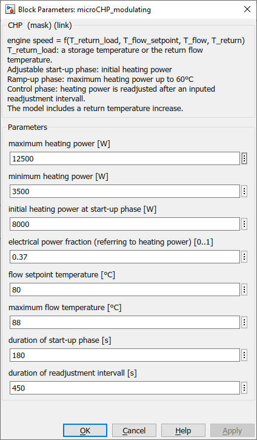

microCHP_modulating
Path:
CARNOT/Source/Cogeneration
Purpose:
Pragraph Block Purpose
Description:
Pragraph Block description
Purpose
This block calculates mass flow rate, outlet flow temperature, fuel and
electrical power of a mini-CHP with modulating power.
Description
The engine speed of this CHP depends on the return flow temperature of the
consumer circuit T_return_load, the flow setpoint temperature T_flow_setpoint
and temperatures of flow T_flow and return flow T_return of the CHP.
T_return_load can be, as circumstances require, a storage temperature or the
return flow temperature.
The modulation is directly implemented on the heating power because of the
linear connection between engine speed and heating power.
During the adjustable start-up phase the CHP runs with inputed initial heating power. Then, the CHP pass over to the ramp-up phase and runs with maximum heating power. As soon as T_flow has reached 60°C the CHP pass over to the control phase. During the control phase the heating power is readjusted after an inputed readjustment intervall.
The generated electrical power and fuel power are based on measured data of
a modulating mini-CHP called "Ecopower" from Vaillant with a heating power
range from 3,5 to 12,5 kW.
The electrical power is calculated by an inputed fraction parameter f_P_el that
refers to the heating power.
The fuel power is calculated by the factor f_P_gas multiplied with the heating
power. P_gas_factor is calculated by linear interpolation between 1.79 at
minimum heating power and 1.5 at maximum heating power (f_P_gas_lookup-table).
The model enables a free scalability of the heating power. It is therefor
needed to enter the desired heating power range and initial heating power.
The maximum mass flow of the pump and thermal capacity of the CHP are linearly
resized according to the relation between inputed maximum heating power and
maximum heating power of the basic unit.
The model includes a return temperature raising facility. A return setpoint
temperature is calculated depending on heating power and flow setpoint temperature.
The thermostatic mixer is located in the return flow of the CHP.
Thermal and electrical efficiency are calculated and summarised in a data output vector.
Input:
| THB_return_load | : | Thermo-Hydraulic Bus of the entering flow |
| control | : | demand signal, range 0..1 |
Output:
| THB_flow_load | : | Thermo-Hydraulic Bus of the leaving flow |
| data | : | Q_thermal [kWh], Q_electrical [kWh], Q_gas [kWh], eta_thermal, eta_electrical, eta_system |
Parameters and Dialog Box:

Examples:
Open the example explorer from the Matlab command window
ExampleBrowser
or load the examples via the CARNOT library.
Literature:
Diourane Mouhcin: Aufbereitung von zwei vorhandenen BHKW-Modellen zur
Bereitstellung in der Carnot-User-Community (Bachelor-Arbeit), 2012
Characteristics:
| Direct Feedthrough | : | Yes |
| Sample Time | : | Inherited from driving block |
| Vectorized | : | No |